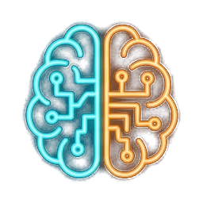
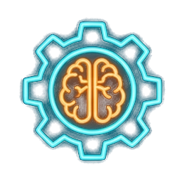
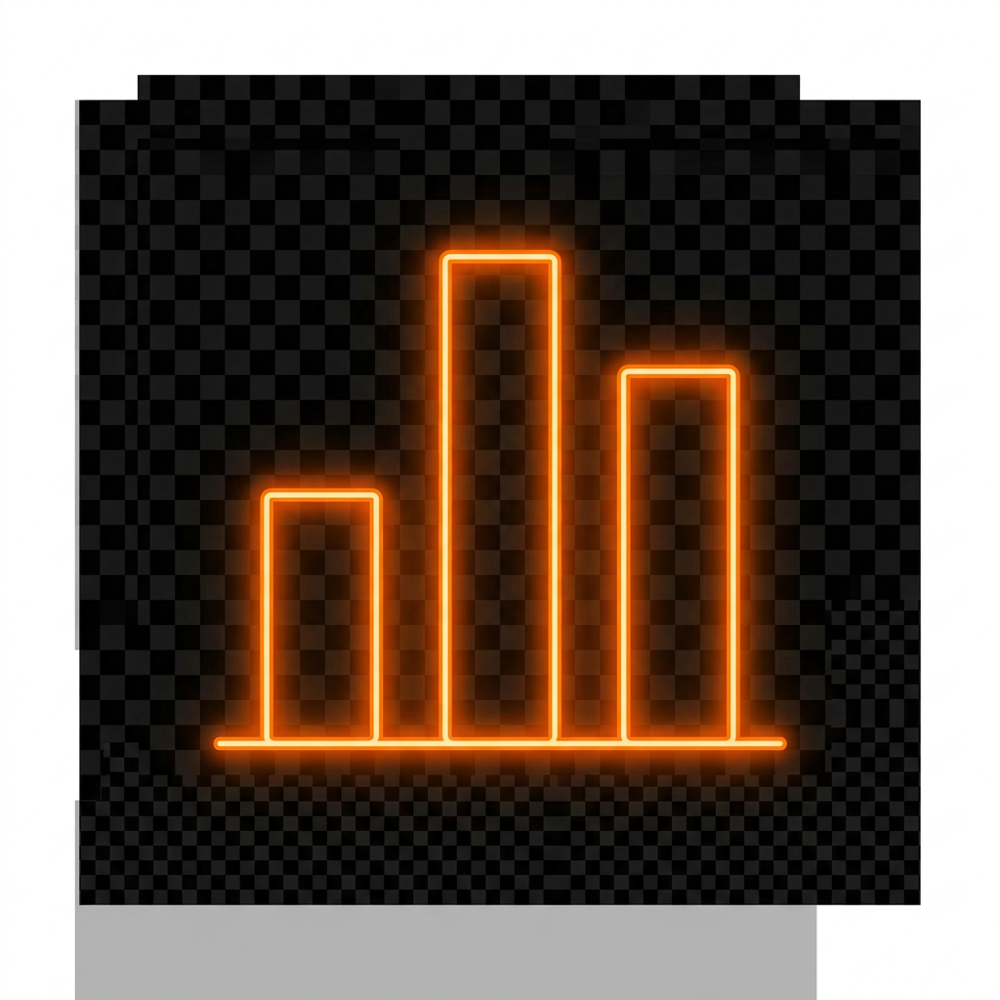

基於 L21 / L22 / L23 三大科目知識庫的戰略級總覽
CC Wu · 2026 年備考版
每年 2 梯次（5 月、11 月）· 選擇題（單選 + 多選）· 中級證書有效期 5 年


L21101–L21104
複習時間：60%
L21201–L21203
複習時間：25%
L21301–L21302
複習時間：15%
⚠️ 比例不對等時，先衝分數高的 L211 技術

同一個技術在四個單元的不同角色
多模態最常考的對比學習核心
| 單元 | 角度 | 關鍵詞 |
|---|---|---|
| L21201 | 風險識別 | 數據風險 |
| L21202 | 風險監控計畫 | 持續追蹤 |
| L21203 | Model Drift | 真實數據變化 |
| L21301 | Data Drift | 分佈差異 |
| L21302 | 監控指標 | PSI 指數、KL 散度 |
💡 部署策略對比：A/B 測試 vs 金絲雀 vs 藍綠 vs 影子
| A | B | 關鍵記憶 |
|---|---|---|
| 生成式 AI | 鑑別式 AI | 生成新 vs 區分 |
| BERT | GPT | Encoder 雙向 vs Decoder 單向 |
| VGG | ResNet | 小核堆疊 vs 殘差連接 |
| YOLO | Faster R-CNN | 速度快 vs 精度高 |
| VAE | GAN | 顯式後驗 vs 對抗隱式 |
| GAN | Diffusion | 不穩定 vs 穩定 |
| 藍綠部署 | 金絲雀 | 零停機 vs 漸進放量 |
| Bagging | Boosting | 並行 vs 串行 |
| PCA | LDA | 無監督 vs 有監督 |
| 標準化 | 正規化 | Z-score vs Min-Max |
| 產品品質檢測 | 傳統 CV（精確、可解釋） |
| 即時物件偵測 | YOLO（單階段） |
| 醫學影像分割 | U-Net |
| 自駕車（類別+個體） | 全景分割 |
| 低資源 NLP | 反向翻譯 Back-Translation |
| 高併發 10000 RPS | 容器化 + 水平擴展 + Auto Scaling |
| 資料漂移偵測 | KL 散度 / PSI |
| GAN 模式崩潰 | Wasserstein 距離（WGAN） |
| 異常偵測聚類 | DBSCAN（自動區分雜訊） |
| GenAI 著作權預防 | 訓練資料篩選 + 授權驗證 |
📦 教材：iPAS_AI_Level2/
🔗 GitHub：ccwu0918/ipas-ai-overview